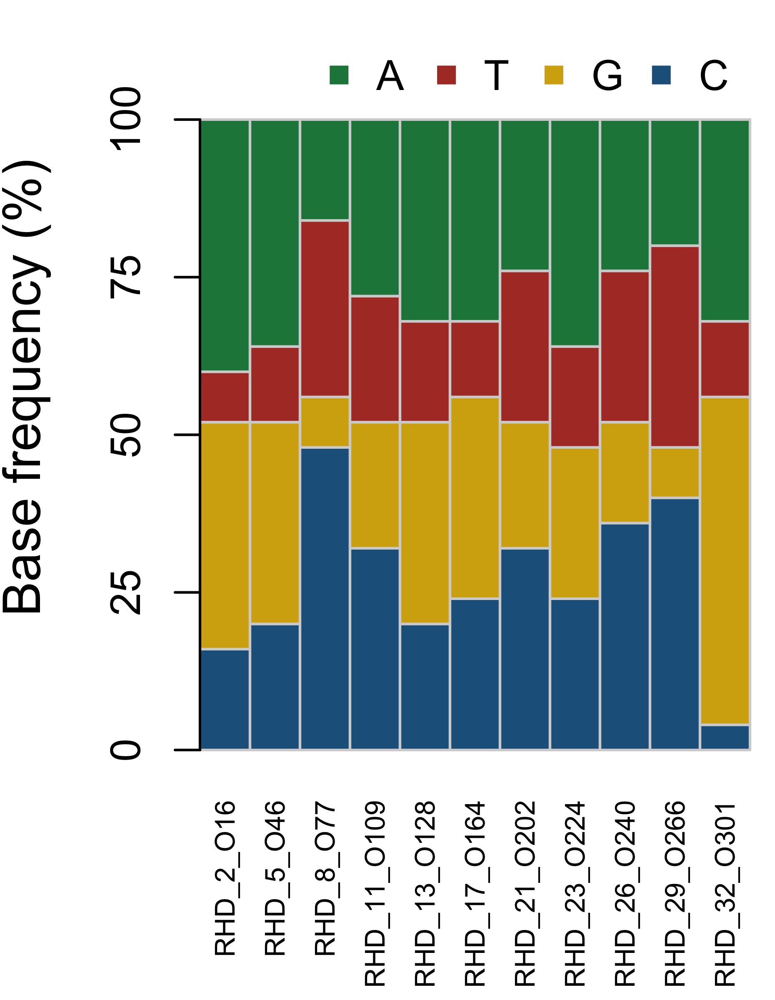
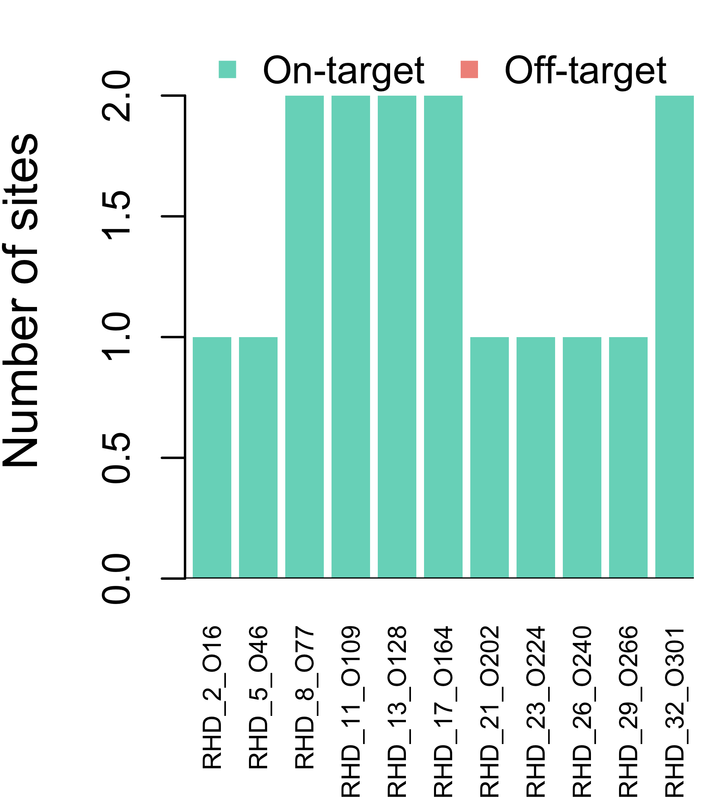
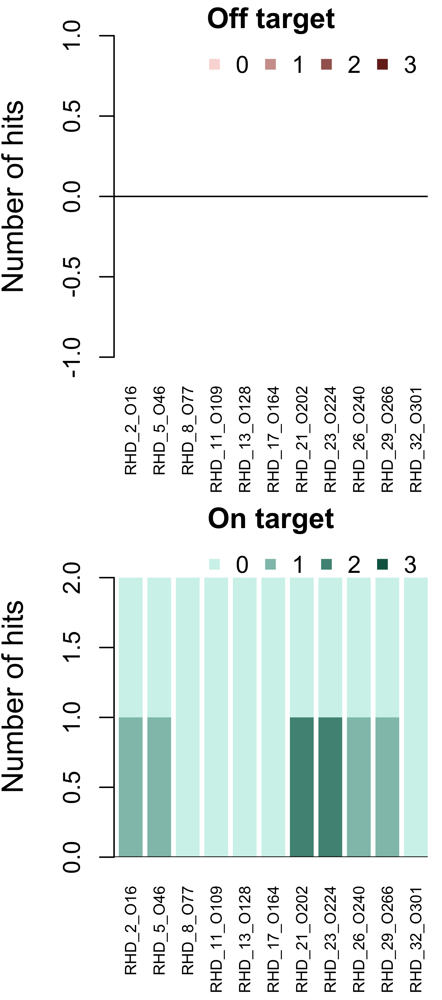
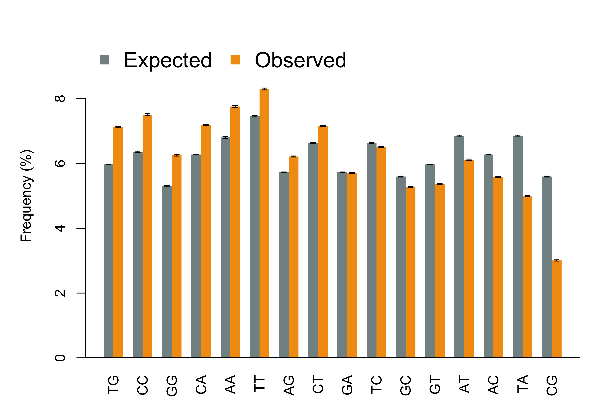
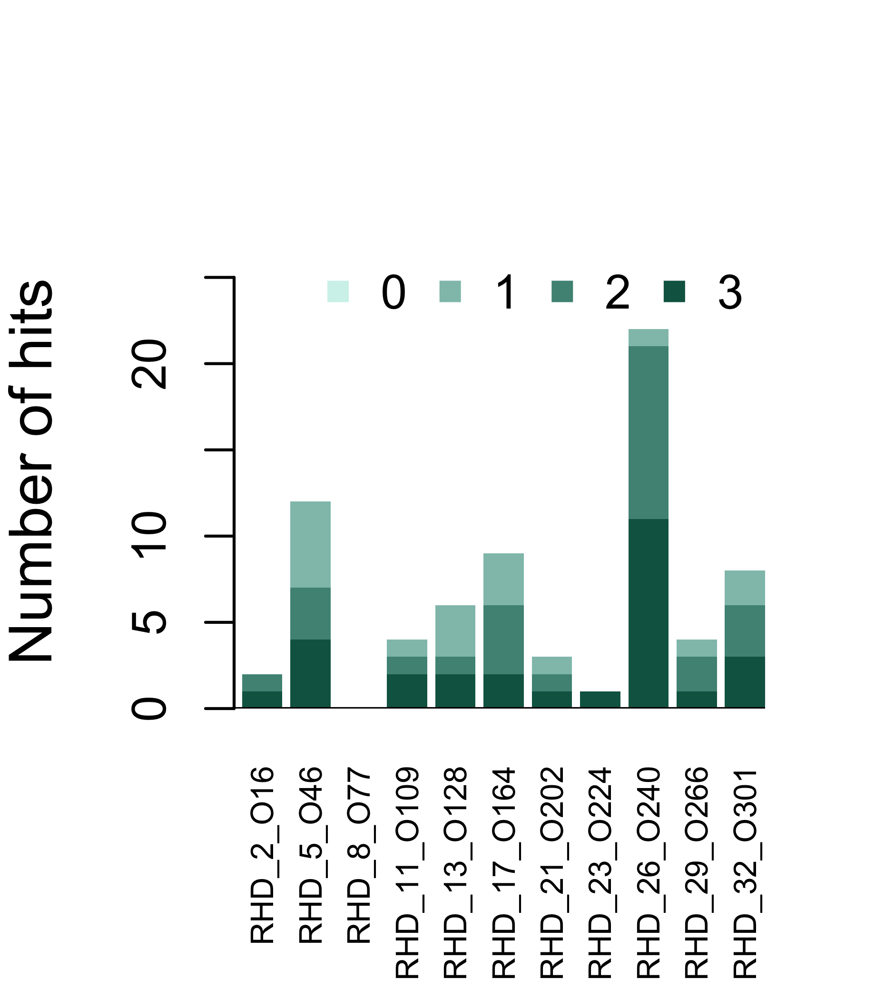
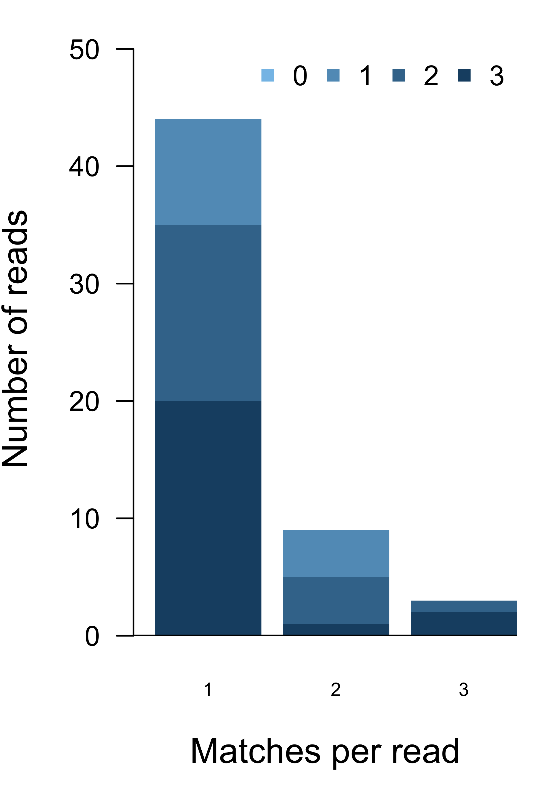

This procedure evaluates the efficiency of primers to capture targeted DNA sequences, in term of
High quality primers should have one or multiple perfect matches in the targeted sequences and no perfect matches in the other parts of the reference genome. In addition, even when mismatches are allowed, the primer should have as few matches in the off-target regions as possible. Primers efficiently capturing targeted sequences should also have matches in the sequencing reads.
Genotyping of RH genes
UPID_380
PacBio technology was used to run whole genome sequencing while designed 25-mer primers were used to enrich 2 RH genes and 10 other genes.
Evaluation of all primers designed to capture 12 targeted genes. The targeted genomic regions include the start and end positions of those genes, with 5kb extension.
Table 1. Input data (primers, sequencing reads, targeted regions, and reference genome). (Genome = GRCh38; Maximum mismatches = 3; Allow INDEL = TRUE)
| Number | Length_Mean | Length_Median | Length_Minimum | Length_Maximum | Length_Total | GC_Percent | |
|---|---|---|---|---|---|---|---|
| Primer | 11 | 25.00 | 25.0 | 25 | 25 | 275 | 52.36 |
| Target | 12 | 34,725.17 | 32,272.5 | 13,194 | 77,944 | 416,702 | 47.62 |
| Reference | 24 | 128,677,909.67 | 133,536,365.5 | 46,709,983 | 248,956,422 | 3,088,269,832 | 41.47 |
| Read | 10,000 | 7,686.48 | 6,006.0 | 50 | 62,616 | 76,864,801 | 47.43 |
General characteristics of all primers.
Figure 1. Primer length.

Figure 2. Frequency of bases in each primer.
An ideal primer should only have perfect match to the targeted regions in the whole reference genome. In addition, they should have as few matches to the off-target regions as possible even when mismatches are allowed.

Figure 3. On-target and off-target perfect matches of each primer within reference genome.
Alert:
Primers with no perfect match to the targeted regions or any perfect match to the off-target regions will be disqualified and excluded from further analysis.
Sequences with small number of mismatches to each can still bind to each other due to cross-hybridization. Therefore, the primers will become less effective if they have a large number of imperfect matches in the reference genome.

Figure 4. Number of hits in the reference genome matching each primer sequence, while allowing up to 3 mismatches. Locations of hits are split according to whether they are on or off targeted regions. Color represents number of mismatched bases.
General characteristics of 10000 sequencing reads.
Table 2. Sequencing read characteristics.
| Min. | 1st Qu. | Median | Mean | 3rd Qu. | Max. | |
|---|---|---|---|---|---|---|
| Length | 50 | 1828 | 6006 | 7686.00 | 11570 | 62620 |
| GC(%) | 12 | 44 | 47 | 47.44 | 51 | 98 |
| N(%) | 0 | 0 | 0 | 0.00 | 0 | 0 |

Figure 5. Expected and actual dinucleotide frequencies in the sequencing reads. Frequency was calculated for each read first and summarized from all reads, so longer reads will not have more weight in the average. Expected frequency was calculated by multiplying the overall frequencies of two bases. Dinucleotide combinations were sorted by the ratio of expected and observed frequencies. Vertical bars are standard errors.
Alignment of primer to sequencing reads.
Summary of primer-to-read alignment by 11 primers.

Figure 6. Occurance of primer sequences in sequencing reads. Color represents number of mismatched bases.
Summary of primer-to-read alignment by 10000 sequencing reads.

Figure 7. Number of reads including up to 6 matches to primer sequences. Color represents number of mismatches.
Check out the RoCA home page for more information.
To reproduce this report:
Find the data analysis template you want to use and an example of its pairing YAML file here and download the YAML example to your working directory
To generate a new report using your own input data and parameter, edit the following items in the YAML file:
if (!require(devtools)) { install.packages('devtools'); require(devtools); }
if (!require(RCurl)) { install.packages('RCurl'); require(RCurl); }
if (!require(RoCA)) { install_github('zhezhangsh/RoCAR'); require(RoCA); }
CreateReport(filename.yaml); # filename.yaml is the YAML file you just downloaded and editedIf there is no complaint, go to the output folder and open the index.html file to view report.
## R version 3.3.3 (2017-03-06)
## Platform: x86_64-apple-darwin13.4.0 (64-bit)
## Running under: OS X Yosemite 10.10.5
##
## locale:
## [1] en_US.UTF-8/en_US.UTF-8/en_US.UTF-8/C/en_US.UTF-8/en_US.UTF-8
##
## attached base packages:
## [1] stats4 parallel stats graphics grDevices utils datasets
## [8] methods base
##
## other attached packages:
## [1] BSgenome.Hsapiens.NCBI.GRCh38_1.3.1000
## [2] BSgenome_1.42.0
## [3] rtracklayer_1.34.2
## [4] GenomicRanges_1.26.4
## [5] GenomeInfoDb_1.10.3
## [6] Biostrings_2.42.1
## [7] XVector_0.14.1
## [8] IRanges_2.8.2
## [9] S4Vectors_0.12.2
## [10] BiocGenerics_0.20.0
## [11] gplots_3.0.1
## [12] htmlwidgets_0.9
## [13] DT_0.2
## [14] kableExtra_0.9.0
## [15] awsomics_0.0.0.9000
## [16] yaml_2.1.16
## [17] rmarkdown_1.10.3
## [18] knitr_1.18
## [19] RoCA_0.0.0.9000
## [20] RCurl_1.95-4.9
## [21] bitops_1.0-6
## [22] devtools_1.13.4
##
## loaded via a namespace (and not attached):
## [1] SummarizedExperiment_1.4.0 gtools_3.5.0
## [3] lattice_0.20-34 colorspace_1.3-2
## [5] htmltools_0.3.6 viridisLite_0.2.0
## [7] XML_3.98-1.9 rlang_0.1.6
## [9] pillar_1.1.0 withr_2.1.1
## [11] BiocParallel_1.8.2 plyr_1.8.4
## [13] stringr_1.2.0 zlibbioc_1.20.0
## [15] munsell_0.4.3 rvest_0.3.2
## [17] caTools_1.17.1 memoise_1.1.0
## [19] evaluate_0.10.1 Biobase_2.34.0
## [21] highr_0.6 Rcpp_0.12.14
## [23] KernSmooth_2.23-15 readr_1.1.1
## [25] scales_0.5.0 backports_1.1.2
## [27] gdata_2.18.0 jsonlite_1.5
## [29] Rsamtools_1.26.2 hms_0.4.0
## [31] digest_0.6.13 stringi_1.1.6
## [33] rprojroot_1.3-2 grid_3.3.3
## [35] tools_3.3.3 magrittr_1.5
## [37] tibble_1.4.2 pkgconfig_2.0.1
## [39] Matrix_1.2-8 rsconnect_0.8.5
## [41] xml2_1.1.1 httr_1.3.1
## [43] rstudioapi_0.7 R6_2.2.2
## [45] GenomicAlignments_1.10.1END OF DOCUMENT